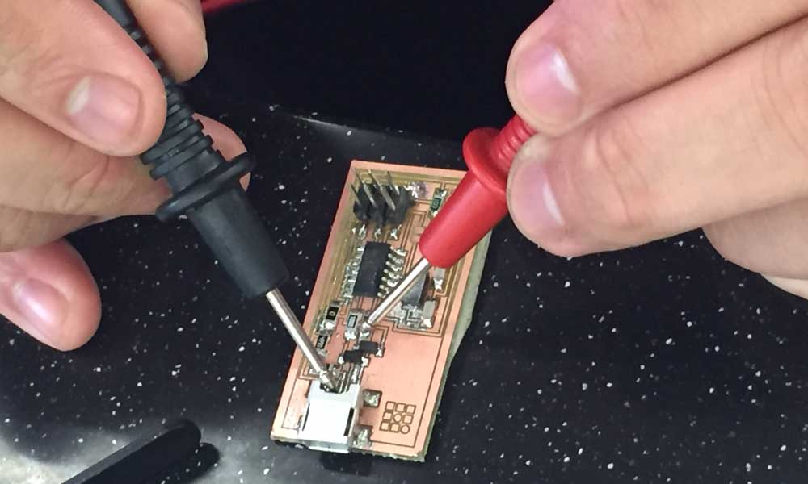

Exercise 04 Electronics Production
Requirement
- Mill out a PCB for In-system Programmer (ISP)
- Solder the components onto the PCB board
- Program the board as an ISP
FabISP
The FabISP is an in-system programmer for AVR microcontrollers, designed for production within a FabLab. It allows you to program the microcontrollers on other boards you make.
Milling the PCB
First, download the board files, hello.ISP.44 board, traces, interior circuit board file from class site.


There are a few ways to mill the PCB. Using Fabmodule.org seems to be the easiest way to mill the PCB, since it takes in PNG directly. Refer to this and this tutorial videos on how to mill the PCB using fabmodules. However, the machine my lab is a LKPF Protomat S103, and requires to read Geber file. I found this tutorial very helpful.
To generate Gerber file from Eagle
In Eagle, open Board view. Import the bitmap format of the traces. Choose File > CAM Processor. This will open the CAM Processor tool that is used to generate the files. To simplify creating Gerber files, Eagle comes with a predefined job for this, and it is called gerb274x.cam. Select where you want to put the Gerber files by clicking on the “File” button and choosing a folder. Do this for all the tabs. Then click Process Job. This creates your Gerber files.To open it in the CAM Processor click File > Open > Job. We use the *.cmp (Copper, component side) and *.plc (Silk screen, component side) files to mill the board.


Stuff Board
Based on the schematic, the components needed are:
- 1x ATiny44 microcontroller
- 1x 1uF capacitor
- 2x 10pF capacitor
- 2x 100 ohm resistor
- 1x 499 ohm resistor
- 1x 1K ohm resistor
- 1x 10K ohm resistor
- 1x 6pin header
- 1x USB connector
- 2x 0 ohm resistors as jumpers
- 1x 20 mHz Crystal
- 2x 3.3V Zener diode
- 1x usb mini cable
- 1x ribbon cable
- two 6 pin connectors
Clip a ribbon cable
Solder Components
I washed the board with soap and rinsed. Then I soldered the mini USB header first because I was told that was the most difficult part. Indeed it was. I spent a whole day trying to do it correctly. Thanks to the support given by Fablab@SP, I was able to make 2 attempts at soldering the boards. The first was a failure because I had applied too much solder to the connectors. The 2nd time I was conscious to apply less solder to my joints, and I was quite happy with myself. The learning curve is sure very steep, from reading schematic to circuit design to soldering and testing, but the result was satisfying.
Things to take note during soldering:
- Temperature must be hot enough. The solder should melt when come in contact with the hot iron.
- Smearing flux onto the PCB board during soldering is important to reduce the oxide on the board. What the flux does, when you heat a workpiece, is it reacts with these metal oxides that are forming with the temperature and exposure to the air, that tend to interfere with the metal-forming process of soldering. So this chemically reacts with these oxides, and makes for a nice, clean metal that can then form a nice, perfect alloy.
- Soldering wick is very useful to soak up excess, unwanted solder from the board.
- Be careful not to create unintentional solder short circuits with adjacent joints. That was my main problem because I used too much solder.
Testing the device
Do the "Smoke Test". Plug the FabISP into your computer via the mini USB cable. If you get an error message from your computer that the board is drawing too much power and that the computer is shutting down the USB port, you have a short somewhere on your board. If you do not receive any message, proceed to "Install the necessary software for AVR programming."

Troubleshooting Short Circuits
- Do a visual inspection of the board and reflow any solder joints that look cold (not shiny and smooth).
- Use a multimeter and check all the connections against each component to make sure that power and ground are not connected. Also check that there is no short on the power line.
FabISP Programming
I am required to create a FabISP from the PCB board I have soldered. One way is to have another FabISP or a commercial ISP to program it. An Arduino UNO can be used for this task. But I do not have a spare board that can do that. My classmate was able to successfully program his board, so I could use his as my programmer.
Avrdude -h is very helpful to know the command lines to use to programme the microcontroller.
C:\WinAVR\bin>avrdude -h avrdude: unknown option -- h Usage: avrdude [options] Options: -p <partno> Required. Specify AVR device. -b <baudrate> Override RS-232 baud rate. -B <bitclock> Specify JTAG/STK500v2 bit clock period (us). -C <config-file> Specify location of configuration file. -c <programmer> Specify programmer type. -D Disable auto erase for flash memory -i <delay> ISP Clock Delay [in microseconds] -P <port> Specify connection port. -F Override invalid signature check. -e Perform a chip erase. -O Perform RC oscillator calibration (see AVR053). -U <memtype>:r|w|v:[:format] Memory operation specification. Multiple -U options are allowed, each request is performed in the order specified. -n Do not write anything to the device. -V Do not verify. -u Disable safemode, default when running from a script. -s Silent safemode operation, will not ask you if fuses should be changed back. -t Enter terminal mode. -E <exitspec>[,<exitspec>] List programmer exit specifications. -x <extended_param> Pass to programmer. -y Count # erase cycles in EEPROM. -Y <number> Initialize erase cycle # in EEPROM. -v Verbose output. -v -v for more. -q Quell progress output. -q -q for less. -? Display this usage.
We have to edit the Make file to such:
AVRDUDE = avrdude -c usbtiny -p $(DEVICE) # edit this line for your programmer
#AVRDUDE = avrdude -c avrisp2 -P usb -p $(DEVICE) # edit this line for your programmer
Compile the firmware using:
make clean
The commands used on avrdude are:
avrdude -v -v -c usbtiny -p t44 -e #perform a chip erase
avrdude -v -v -c usbtiny -p t44 -U lfuse:w:0xff:m -U hfuse:w:0xdf:m -U flash:w:main.hex:i #load main.hex to chip
Verify the ISP is working properly
With the help of my classmates and instructor, I was able to load the firmware onto my FabISP. Windows 10 is able to recognize it as USBtiny.It is hard to be entirely sure that the board is working properly as there is not indication to show that. Some of my classmates occasionally face the problem of unrecognized device even after the firmware has been loaded into the chip successfully. It could be poor connection or soldering. We don't know for sure.
Removing the jumpers
After the firmware was loaded to the microcontroller, we have to remove the SJ1 to prevent further writing onto the chip. We also remove the 0 ohm resister SJ2 to prevent electrical flow. Now we can use this as a programmer to program other boards.
Download workfiles
References
- How To Create a Gerber File Using Eagle
- FabISP: Electronics Production
- What Is Flux? | Soldering
- Learn Simple Surface Mount Soldering in Collin’s Lab
- Common Soldering Problems
- Solder Shorts on a Printed Circuit Board
- FabISP: Programming
- Arduino as an ISP
- AVRDUDE - Using the programmer with AVRDUDE
- FabISP, a fab-able in-system programmer
- Engbedded Atmel AVR® Fuse Calculator